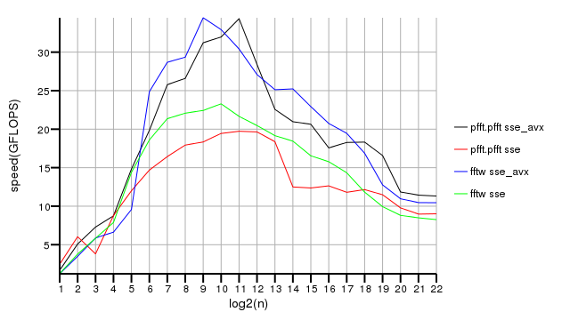
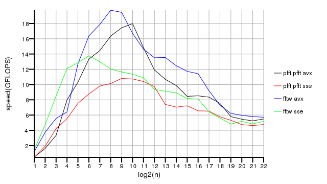
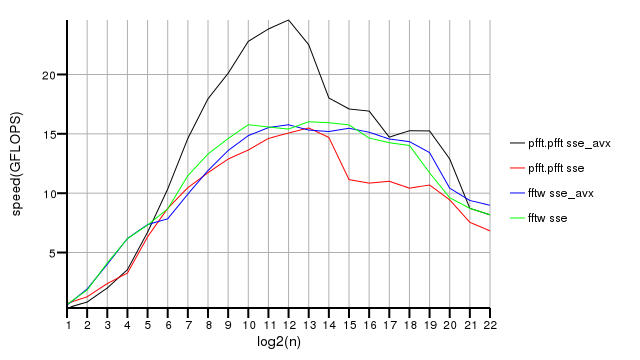
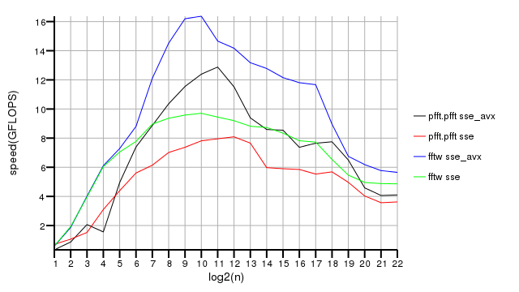
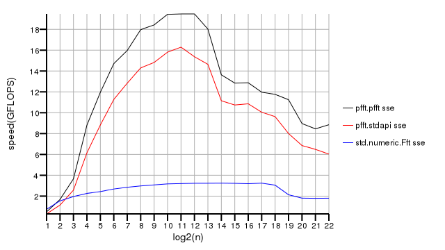
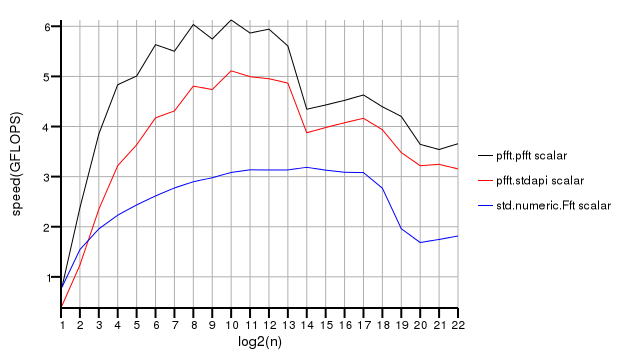
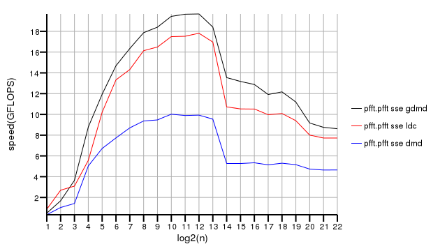

Pfft Benchmarks
This page contains the results of the pfft benchmarks. On the x axis of the charts there is base two logarighm of the length of the input sequence and on the y axis there is the speed in GFLOPS. The speed in GFLOPS is defined as the number of operations that a basic Cooley-Tukey algorithm would take to perform a transform divided by the number of nanoseconds the function call takes. So the speed in GFLOPS is calculated like this:
5 * n * log2(n) / nanoseconds
for the complex transforms and like this:
2.5 * n * log2(n) / nanoseconds
for the real ones.
The pfft code was compiled (unless noted otherwise) using the GDC compiler compiled with GCC 4.8.0 20120715. All the benchmarks were done using the test/test.d file and were run on an Intel Core i5 2500K CPU. The operating system was Debian Wheezy.
The benchmarks on this page are for 0.1.1 release of pfft.
Comparison with FFTW
This sections contains a speed comparison of pfft and FFTW. The version of FFTW used was 3.3.2 and it was compiled using GCC 4.8.0 20120603. The FFFTW_PATIENT flag was passed to all the fftw planner functions. This flags results in fast transform times but very slow initialization.
Complex single precision transform

Complex double precision transform

Real single precision transform

Real double precision transform

Comparison of Phobos and two interfaces to pfft
This section compares the speed of the FFT in Phobos (std.numeric.Fft), the
speed of the pfft API in pfft.pfft and the speed of the Phobos compatible
API for pfft in pfft.stdapi. All results are for a complex single precision
transform. The FFT in Phobos does not use SIMD, so the std.numeric.Fft in all
three graphs uses scalar floating point math.
AVX floating point math

SSE floating point math

Scalar floating point math

Comparison of different D compilers
The chart below compares the speed of pfft when compiled with DMD, LDC and GDC. The version of DMD was 2.59. The LDC used was revision 56233a373ce.
Complex single precision transform
